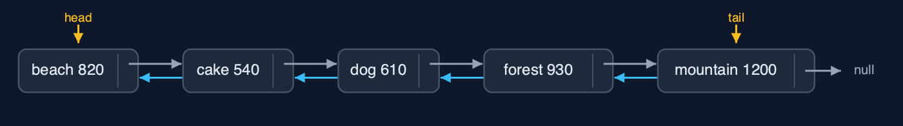

Doubly Linked List (Generic) — Cheat Sheet
A generic doubly linked list is the doubly linked list written once with a type parameter T: each Node<T> has prev, a reference to its data, and next; the list keeps head and tail, matches with equals, and keeps every cost: O(1) at both ends, O(n) to reach a position. It is the shape of java.util.LinkedList<E>.

| What it is | A generic doubly linked list is the doubly linked list with a type parameter: Node<T> with prev, data and next, head and tail, equals for matching, and the same O(1) work at both ends. |
| Everyday picture | A train of carriages carrying any cargo, coupled both ways |
| Use it when | Any list of objects of one type that is walked both ways or changed at both ends; A deque or an LRU cache of any element type |
| Avoid it when | Reading by position: use ArrayList<E>; Memory is tight: each element costs a node with two pointers plus the object |
| Already in Java | java.util.LinkedList<E>, a generic doubly linked list with head and tail |
Costs
| Operation | What it does | Time: best / average / worst | Extra space | Steps counted in the demo |
|---|---|---|---|---|
| Display forward / backward | Follow next from head, or prev from tail | O(n) / O(n) / O(n) | O(1) | 5 steps each way for 5 photos |
| Insert / delete at beginning or end | Through head or tail: 3 pointers to insert, 2 to delete | O(1) / O(1) / O(1) | O(1) | 0 steps |
| Insert at position | Walk to the node before, then set 4 pointers | O(1) at the ends / O(n) / O(n) | O(1) | 4 pointer changes |
| Delete a node already reached | node.prev.next = node.next; node.next.prev = node.prev | O(1) / O(1) / O(1) | O(1) | 2 pointer changes |
| Delete by key / search | Walk comparing with equals, then unlink | O(1) / O(n) / O(n) | O(1) | 3 comparisons, 2 pointer changes |
| Count / get | Walk from head | O(n) / O(n) / O(n) | O(1) | one step per node |
| Reverse | Swap prev and next in every node, then head and tail | O(n) / O(n) / O(n) | O(1) | 12 pointer changes for 5 nodes |
Compared with related structures
The generic doubly linked list against its neighbours (n nodes):
| Property | Generic doubly list | Doubly list of String | Generic singly list |
|---|---|---|---|
| Element types | any T | String only | any T |
| Insert / delete at the end | O(1) | O(1) | O(n) |
| Delete a node already reached | O(1) | O(1) | O(n) |
| Walk backwards | yes | yes | no |
| Pointers per node | 2 | 2 | 1 |
| Java's own | LinkedList<E> | LinkedList<String> |
Watch out for
- **Matching with
==**: Useequals. - Forgetting one of the four insertion pointers: Set all four, as in the String-only list.
- Raw types: Always write the type argument.
- Not updating head or tail at the ends: Move
headortailwhen the deleted node has no prev or no next.